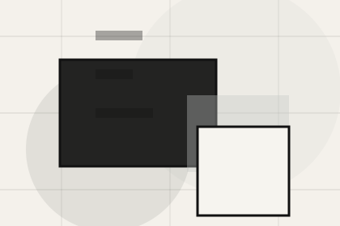
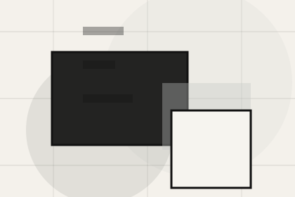
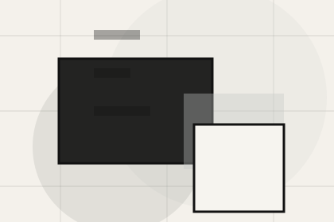
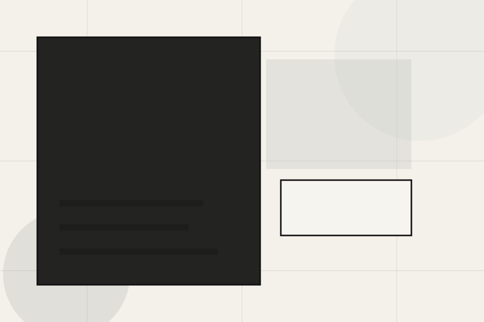
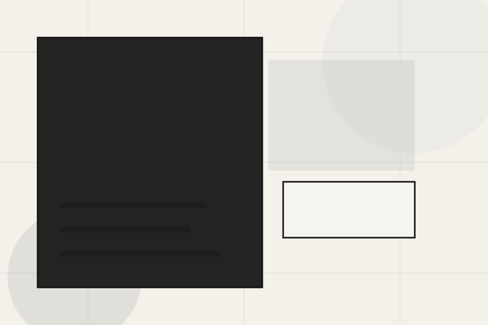
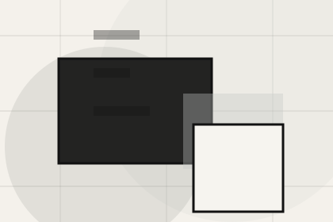
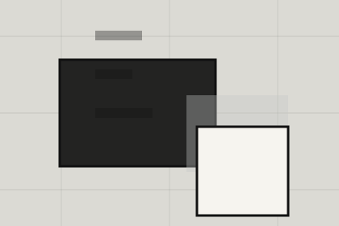

Studio
Open the studio route for philosophy, team, credentials so architecture, planning & built environment visitors can compare context, proof, and next steps.
Open StudioHome / 01
Home opens as a clear architecture decision hub: what Craft offers, who it helps, why it matters, and which route to take first.
The first screen combines positioning, proof, primary action, and fast internal navigation, so people can act immediately or compare the rest of the home route with context.
Minimal full-bleed project hero
Select the closest route and Craft keeps the next step, proof, and follow-up expectation aligned with taste and design authority.
Site atlas
This homepage is the working index for architecture, planning & built environment: it explains the offer, points to every deeper page, and keeps the final action visible without making the visitor hunt.
A spatial portfolio site with minimal chrome, full-bleed project moments, thin metadata, and studio enquiry. The page links problem, promise, services, process, proof, questions, support, legal routes, and conversion paths into one clear decision map.
Open the studio route for philosophy, team, credentials so architecture, planning & built environment visitors can compare context, proof, and next steps.
Open StudioOpen the projects route for portfolio, residential, commercial so architecture, planning & built environment visitors can compare context, proof, and next steps.
Open ProjectsOpen the services route for concept, planning, design so architecture, planning & built environment visitors can compare context, proof, and next steps.
Open ServicesOpen the process route for brief, research, concept so architecture, planning & built environment visitors can compare context, proof, and next steps.
Open ProcessOpen the planning route for need, regulations, applications so architecture, planning & built environment visitors can compare context, proof, and next steps.
Open PlanningOpen the pricing route for fees, stages, deliverables so architecture, planning & built environment visitors can compare context, proof, and next steps.
Open PricingOpen the insights route for design, planning, sustainability so architecture, planning & built environment visitors can compare context, proof, and next steps.
Open InsightsOpen the questions route for permissions, timelines, fees so architecture, planning & built environment visitors can compare context, proof, and next steps.
Open QuestionsOpen the contact route for project, site, budget so architecture, planning & built environment visitors can compare context, proof, and next steps.
Open ContactReview the local assets, icons, OG images, and static handoff materials used by Craft.
Open Asset SystemUse the full sitemap to recover any route and verify the whole Craft structure.
Open SitemapRead the privacy route before sending personal details through the static form.
Open PrivacyManage consent and understand the privacy-safe analytics approach.
Open CookiesHome / 02
Vision adds editorial context to the home route, using the spatial project index structure to support taste and design authority before visitors choose a next step.
Craft uses architectural index cards and focused copy to make the decision easier to scan, aligning the section with taste and design authority rather than filling space.
Open StudioVision gives the page a specific angle instead of repeating the navigation label.
The architectural index cards show what to compare, what to avoid, and what matters most for architecture, planning & built environment visitors.
The final cue points to a useful internal route so the section keeps the journey moving.
Home / 03
Context adds editorial context to the home route, using the spatial project index structure to support taste and design authority before visitors choose a next step.
Craft uses architectural index cards and focused copy to make the decision easier to scan, aligning the section with taste and design authority rather than filling space.
Open Projects

Context gives the page a specific angle instead of repeating the navigation label.
Home / 04
Promise defines the better state Craft is built to create, with enough detail to make the promise believable.
A spatial portfolio site with minimal chrome, full-bleed project moments, thin metadata, and studio enquiry. The section grounds that direction in concrete benefits, visible tradeoffs, and a next route visitors can use when the promise feels relevant.
Open ServicesPromise defines what becomes clearer, easier, or safer when Craft is the chosen route.

The benefit is tied to taste and design authority, not a vague quality claim.
Visitors get a linked path to compare the promise against services, standards, or examples.
Home / 05
Projects adds editorial context to the home route, using the spatial project index structure to support taste and design authority before visitors choose a next step.
Craft uses architectural index cards and focused copy to make the decision easier to scan, aligning the section with taste and design authority rather than filling space.
Open ProcessProjects gives the page a specific angle instead of repeating the navigation label.


Home / 06
Services explains the practical scope, best-fit situations, and expected outcome so architecture visitors can compare options without decoding jargon.
The section keeps the offer concrete: what is included, who it is best for, what decision it supports, and which linked route gives the deeper detail.
Open ServicesWho should use services and when it belongs in the home journey.
The practical benefit visitors should expect after choosing this route.
Where to compare details, pricing, support, or contact options before committing.
Minimal full-bleed project hero
Select the closest route and Craft keeps the next step, proof, and follow-up expectation aligned with taste and design authority.
Home / 07
Process explains the operating sequence so visitors can see how the first request becomes a clear recommendation and follow-up.
The steps are written from the visitor side: what they do first, what Craft clarifies, what they receive, and how support continues.
Open ProcessHow visitors begin this route and what detail is useful at the first step.
What Craft reviews, filters, or explains before recommending the next move.
What the visitor receives afterward, including support, proof, or a handoff to the next page.
Home / 08
Awards adds editorial context to the home route, using the spatial project index structure to support taste and design authority before visitors choose a next step.
Craft uses architectural index cards and focused copy to make the decision easier to scan, aligning the section with taste and design authority rather than filling space.
Open InsightsAwards gives the page a specific angle instead of repeating the navigation label.
The architectural index cards show what to compare, what to avoid, and what matters most for architecture, planning & built environment visitors.
The final cue points to a useful internal route so the section keeps the journey moving.
Home / 09
Questions handles buying doubts directly so visitors can understand timing, fit, limits, and the safest next step.
Answers are short by design: enough to remove hesitation, not so much that the page turns into documentation before the visitor can act.
Open ContactQuestions gives the page a specific angle instead of repeating the navigation label.
The architectural index cards show what to compare, what to avoid, and what matters most for architecture, planning & built environment visitors.

The final cue points to a useful internal route so the section keeps the journey moving.
Craft starts with a focused intake so the recommendation matches the visitor's context, risk, timing, and readiness.
Each route explains inclusions, exclusions, documents, timing, and the decision points that affect final delivery.
The theme uses spatial project index, architectural index cards, and project gallery, planning stage stepper, image reveal rather than a shared template rhythm.
Minimal full-bleed project hero
Select the closest route and Craft keeps the next step, proof, and follow-up expectation aligned with taste and design authority.
Information is provided for planning and should be reviewed for the final client, location, and operating rules.
Home / 10
Craft closes the home route with a clear action, a quick reminder of the value, and a low-friction way to discuss the project.
Visitors who are ready can use the primary action. Visitors who are still comparing can scan the section links, proof, and support routes before they discuss the project.
Discuss ProjectThe final block keeps the choice simple: act now, compare one more proof route, or send enough detail for a focused response.
Discuss Projecttaste and design authority
A spatial portfolio site with minimal chrome, full-bleed project moments, thin metadata, and studio enquiry. Home ends with a direct path to discuss the project, plus enough context for visitors who still need to compare.

Discuss Project